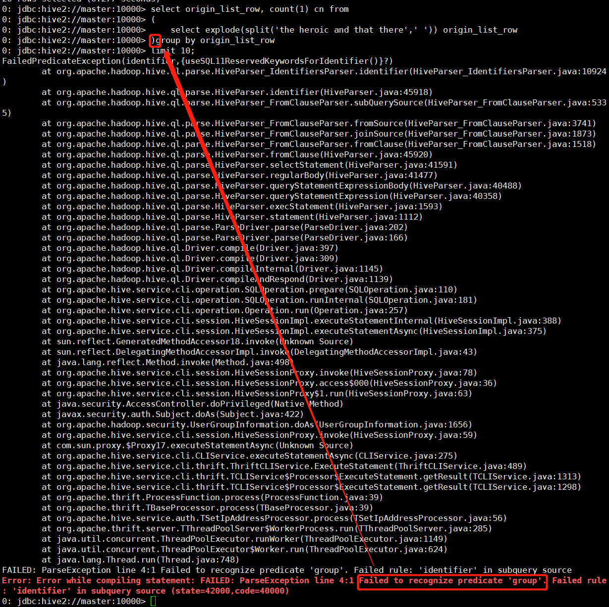

移花接木-Hive
01. Hive 1.x
02. Beeline连接Hive（Review）
这里使用的是
Hive Metastore ➡ hiveserver2 ➡ beeline的连接方式（启动方式见下方）.也可以使用
Hive Metastore ➡ hive（CLI）的连接方式后缀为重定向，需百度解决（已解决，详见 20191224_1414_Hive-1.x配置）
# hive-site.xml中配置了hive.metastore.uris后，无论是HS2或是Hive CLI开启前，都需开启Metastore
hive --service metastore 1>/dev/null 2>&1 &
# beeline方式连接Hive，默认端口为10000
hive --service hiveserver2 &
#beeline
#!connect jdbc:hive2://master:10000 root 123456
beeline -u jdbc:hive2://master:10000 -n root -p 123456 --color=trueTips 仅退出当前beeline: !close 彻底退出: !q 查询表: !tables
03. Hive 元素
3-1 元数据 & 数据
- Hive中的表是纯逻辑表，即
元数据； - 数据存储在
HDFS上，元数据与数据存储分离； - 数据计算依赖分布式计算框架 MapReduce；
- Hive
读多写少，从HDFS中读，MR计算，并写回HDFS；不支持数据改写&删除； - 用户需指定
三个属性用来定义数据格式：
列分隔符：空格 ‘,’ ‘\t’
行分隔符：’\n’
读取数据的方法
3-2 Hive 连接方式
CLI Hive Metastore → hiveserver2(HS2) → BeelineJDBC Metastore → Java/Python/C++WUI apache-hive-0.13.0-src.tar.gz → hive –service hwi
3-3 Hive HDFS
- HDFS部分主要是贮存离线数据，主要就是数据目录或数据的相关操作（详见 20201219_2347_Hadoop-2.6.1（持续更新）.
04. 数据入库
4-0 内置函数
--时间戳
select current_date; --2020-02-13
select current_timestamp; --2020-02-13 18:09:40.666
--转内核时间格式
select to_unix_timestamp('2020-02-13 12:12:12'); --1581567132
--内核转当前可读
select from_unixtime(unix_timestamp()); --2020-02-13 18:09:12
select from_unixtime(unix_timestamp(), 'yyyy-MM-dd HH:mm:ss');
--字符串转日期
select to_date('2020-02-13 13:34:12');
--时间戳间隔天数
select datediff('2020-02-13','2020-02-15');
select date_sub('2020-02-13',4);
select date_add('2015-04-09',4); --select date_sub('2020-02-13',-4);
year/month/day/hour/minute/second4-1 DML
- 表的属性
- 一张表 是内部表或者外部表， 这两个是二选一的
- 一张表可以是分区表
- 一张表可以是分桶表
- 一张表可以是分区表也可以是分桶表
- 第一条和剩余三条可以搭配（内部【外部】分区表 / 内部【外部】分桶表 / 内部【外部】分区分桶表）
内部表
create table hive_student_mng(id int, name string, sex string, age int, department string) row format delimited fields terminated by "," lines terminated by "\n";
/*
row format 格式化关键字
delimited
fields terminated by "," 字段与字段之间的分隔符
lines terminated by "\n"; 记录与记录之间的分隔符
serde --这个参数忘记用途了
...
*/
--从HDFS内导入
load data inpath '/data/hive_hdfs/student.txt' into table hive_student_mng;
--从本地导入
load data local inpath '/data/hive/student.txt' into table hive_student_mng;Tips从HDFS导入数据相当于mv，从local导入数据相当于cp
外部表
create external table hive_student_ext(id int, name string, sex string, age int, department string) row format delimited fields terminated by "," lines terminated by "\n" location '/usr/local/src/apache-hive-1.2.2-bin/warehouse/hive_student_ext';
--从HDFS内导入
load data inpath '/data/hive_hdfs/student.txt' into table hive_student_ext;
--从本地导入
--load data local inpath '/data/hive/student.txt' into table hive_student_mng;CTAS
--类Oracle
create table hive_student_mng_2 as select * from hive_student_mng;分区表
create table hive_student_ptn(id int, name string, sex string) partitioned by (age int, department string) row format delimited fields terminated by ",";
--本地数据至分区表时，需指定分区
-- load data local inpath "/home/hadoop/student.txt" into table student_ptn partition(age=17,department="MA");
--多重模式插入数据至分区表，同样需要指定分区，但是只需遍历一次源表
from hive_student_mng
insert into table hive_student_ptn partition(age=17,department="MA") select id, name, sex where age = 17 and department="MA"
insert into table hive_student_ptn partition(age=18,department="CS") select id, name, sex where age = 18 and department="CS"
insert into table hive_student_ptn partition(age=18,department="IS") select id, name, sex where age = 18 and department="IS";静态分区表
create table hive_student_ptn_static(id int, name string, sex string) partitioned by (dt date) row format delimited fields terminated by ",";
--日期直接写程"-"分割的string即可，Hive引擎会自动试别并转换
alter table hive_student_ptn_static add partition(dt='2020-02-14') partition(dt='2020-02-15');
load data local inpath "xx" into table xxx (column="xx") partition(dt='2020-02-14')动态分区表
- 数据根据分区字段，自动进行分区的创建和数据导入，
作为分区的字段在查询中需要按顺序放在最后！ - 两个重要参数：
- set hive.exec.dynamic.partition=true;
- set hive.exec.dynamic.partition.mode=nonstrict; ⬅非严格动态分区模式，严格动态分区模式需要给分区表至少配置一个静态分区
- 动态分区的一些限制：
set hive.exec.max.dynamic.partitions.pernode=100; ⬅每个节点生成动态分区最大个数
set hive.exec.max.dynamic.partitions=1000; ⬅生成动态分区最大个数，如果自动分区数大于这个参数，将会报错
--动态分区表插入数据
create table hive_student_ptn_2(id int, name string, sex string) partitioned by (age int, department string) row format delimited fields terminated by ",";
insert into table hive_student_ptn_2 partition(department='xxx', age) select id, name, sex, age from hive_student_mng; 分桶表（有疑问）
create table hive_student_bucket (id int, name string, sex string, age int, department string)
clustered by (age) sort by (age desc, id asc) into 2 buckets row format delimited fields terminated by ",";
--虽然创建分桶表的时候指定了分桶字段和排序字段
--但是数据到底有没有进行分桶和排序是根据插入数据的HQL决定的（这边还是不太理解）
set mapreduce.job.reduces=3;
insert into table hive_student_bucket select * from hive_student_mng distribute by age sort by age desc, id asc;
--distribute by
--方法1：导出，将分桶表导出，不设置mapreduce.job.reduces，默认为2个reduces，导出两个文件
insert overwrite local directory "/data/hive/hive_student_bucket_2/" select * from hive_student_bucket;
--放法2：导出，在源表的基础上使用分桶排序关键字做查询并导出，3个reduces，三个文件
set mapreduce.job.reduces=3;
insert overwrite local directory "/data/hive/hive_student_bucket/" select * from hive_student_mng distribute by age sort by age desc, id asc;
--方法3：分桶表的基础上再做分桶，和方法2有点冗余，结果相同
set mapreduce.job.reduces=3;
insert overwrite local directory "/data/hive/hive_student_bucket_4/" select * from hive_student_bucket distribute by age sort by age desc, id asc;
--cluster by
distribute by age sort by age == cluster by ageTips虽然cluster有简化分桶操作的概念，但是日常操作时还是建议使用distribute by + sort by.Tips导出分桶数据有两种方式，但是导出的数据文件状态不同：其一，利用方法1导出，表本身分为3桶（0/1/2），即便设置reduce数量，但仅能导出2个文件，3桶中的0和2被放置在一个文件中；其二，按照正常分桶逻辑，3桶导出3个文件（0/1/2）；其三，对分桶表做分桶导出，和方法2一样，也是导出3文件，但显得很啰嗦.Tips导出的文件含有隐藏分隔符^A（\x01，ctrl+V+A），需要用tab替换下，便于后续入库：
sed -e ‘s/^A/\t/g’ ⬅查看
sed -i ‘s/^A/\t/g’ ⬅修改
4-2 DQL
支持 VS 不支持
- 支持union all/ join/like/where/having/各种聚合/json解析
- 支持UDF/UDAF/UDTF
- 支持in/exists，但是Hive推荐使用semi join（半连接）
- 支持case when
- 支持truncate，和Oracle类似，只清数据，不清分区
- 不支持update/delete
- 不支持or条件
- 不支持非等值连接
--半连接
select a.* from a semi join b on a.id = b.id;- 下面是个字段切割的例子：Local数据导入，数据位于Master节点：/data/mr_wc/The_man_of_property.txt
--databases list
show databases;
OK
+----------------+--+
| database_name |
+----------------+--+
| badou |
| default |
+----------------+--+
--查询库路径
desc database badou;
OK
+----------+----------+----------------------------------------------------------------------------+-------------+-------------+-------------+--+
| db_name | comment | location | owner_name | owner_type | parameters |
+----------+----------+----------------------------------------------------------------------------+-------------+-------------+-------------+--+
| badou | | hdfs://master:9000/usr/local/src/apache-hive-1.2.2-bin/warehouse/badou.db | root | USER | |
+----------+----------+----------------------------------------------------------------------------+-------------+-------------+-------------+--+
1 row selected (0.225 seconds)
use badou;
OK
--元数据建立
create table article(sentence string) row format delimited fields terminated by '\n'; -- location /data/xxx --每一行的format
desc article; --查询表结构
--数据导入前，表为空
select article.sentence from article limit 2;
--本地数据load（Local Load）,注意这里是Linux服务器本地数据导入
load data local inpath '/data/mr_wc/The_man_of_property.txt' into table article;
--导入数据：
--load data inpath '/data/The_man_of_property.txt' into table article; --导入 HDFS 数据：
--load data local inpath '/data/mr_wc/The_man_of_property.txt' into table article; --导入本地数据：
--再次查询
select article.sentence from article limit 1;
OK
+-------------------+--+
| article.sentence |
+-------------------+--+
| Preface |
+-------------------+--+
1 row selected (0.185 seconds)- HDFS数据目录
- 入库的article.txt数据load进了HDFS对应目录
- 一句对应sentence列中的一行，现在要做Word Count，相当于将每行sentence切分为一个个单词，并转换进同一列（一个单词一行，所有单词并入同一列）
[root@master sbin]# hadoop fs -ls /usr/local/src/apache-hive-1.2.2-bin/warehouse/badou.db/article/
Found 1 items
-rwx-wx-wx 1 root supergroup 632207 2019-12-24 14:34 /usr/local/src/apache-hive-1.2.2-bin/warehouse/badou.db/article/operty.txt
--单词按照空格切分，结果为数组格式，以下是样例演示
--Hive里很特别，语句不限于SQL模式，可以将HQL的结果按照数据下标提取出来
select 'the heroic and that there' as origin,
split('the heroic and that there',' ') as origin_list,
split('the heroic and that there',' ')[0] as word1,
split('the heroic and that there',' ')[1] as word2;
+----------------------------+----------------------------------------+--------+---------+--+
| origin | origin_list | word1 | word2 |
+----------------------------+----------------------------------------+--------+---------+--+
| the heroic and that there | ["the","heroic","and","that","there"] | the | heroic |
+----------------------------+----------------------------------------+--------+---------+--+
--单行转多行
select explode(split('the heroic and that there',' ')) origin_list_row;
OK
+------------------+--+
| origin_list_row |
+------------------+--+
| the |
| heroic |
| and |
| that |
| there |
+------------------+--+
--wc
select origin_list_row, count(1) cn from
(
select explode(split('the heroic and that there',' ')) origin_list_row
)w --记得这里要加上子查询的别名，不然会出现以下错误
group by origin_list_row
limit 100;iii. 这里涉及了group by，会跑一组MR
TipsHQL内子查询的外侧要起别名，遗漏时会报错

正则过滤
--HQL
select regexp_extract('(mentioned', '[[\\w]]+', 0);
select regexp_extract('(mentioned', '[[0-9a-zA-Z]]+', 0);
--regexp_extract
select * from
(
select regexp_extract(origin_list_row, '[[0-9a-zA-Z]]+', 0) word, count(1) cn from
-- select origin_list_row, count(1) cn from
(
select explode(split(sentence,' ')) origin_list_row from article
)a --记得这里要加上子查询的别名，不然会出现以下错误
group by regexp_extract(origin_list_row, '[[0-9a-zA-Z]]+', 0) --Jobs:1 Map: 1 Reduce: 1
)b
where length(word) > 0 --去除None值
order by cn desc
limit 100; --加上排序后，Jobs:2 Map: 2 Reduce: 2
--部分样例对比结果如下：
⬇ RE过滤 ⬇ 原始单词
+-----------+-----+--+ +-----------------------+-----+--+
| word | cn | | origin_list_row | cn |
+-----------+-----+--+ +-----------------------+-----+--+
| | 35 | | | 35 |
| Baynes | 1 | | (Baynes | 1 |
| Dartie | 1 | | (Dartie | 1 |
| Dartie | 1 | | (Dartie’s | 1 |
| Down | 2 | | (Down-by-the-starn) | 2 |
| Down | 1 | | (Down-by-the-starn), | 1 |
| He | 1 | | (He | 1 |
| I | 1 | | (I | 1 |
| James | 1 | | (James) | 1 |
| L500 | 1 | | (L500) | 1 |
| Louisa | 1 | | (Louisa | 1 |
| Mrs | 1 | | (Mrs. | 1 |
| Roger | 1 | | (Roger | 1 |
| Roger | 1 | | (Roger’s | 1 |
| Soames | 1 | | (Soames | 1 |
| Soames | 1 | | (Soames) | 1 |
| The | 1 | | (The | 1 |
| a | 5 | | (a | 5 |
| also | 1 | | (also | 1 |
| although | 1 | | (although | 1 |
+-----------+-----+--+ +-----------------------+-----+--+
--where条件的添加，去除空值
+-----------+-------+--+ +-----------+-------+--+
| b.word | b.cn | | b.word | b.cn |
+-----------+-------+--+ +-----------+-------+--+
| the | 5168 | | the | 5168 |
| of | 3425 | | of | 3425 |
| to | 2822 | | to | 2822 |
| and | 2686 | | and | 2686 |
| a | 2564 | | a | 2564 |
| he | 2251 | | he | 2251 |
| his | 1929 | | his | 1929 |
| in | 1753 | | in | 1753 |
| was | 1745 | | was | 1745 |
| had | 1534 | | had | 1534 |
| that | 1387 | | that | 1387 |
| | 1309 | | her | 1200 |
| her | 1200 | | with | 1037 |
| with | 1037 | | it | 976 |
| it | 976 | | at | 822 |
| at | 822 | | for | 798 |
+-----------+-------+--+ +-----------+-------+--+4-3 分区/分桶（4.1中有建立过程，具体分析见0x）
05. 数据类型
array
create table hive_array(name string, citys array<string>)
row format delimited fields terminated by '\t' collection items terminated by ',';
--数据样式：huangbo beijing,shanghai,tianjin,hangzhou
load data local inpath "/data/hive/array0217.txt" into table hive_array;
--查询
select citys, citys[0] from hive_array;map（dict）
create table hive_map(name string, score map<string, int>)
row format delimited fields terminated by '\t'
collection items terminated by ','
map keys terminated by ':';
--数据样式：huangbo yuwen:80,shuxue:89,yingyu:95
--实际工程中可以将map拆分成多个字段，便于使用
--查询
select citys, citys['yingyu'] from hive_map;struct
create table hive_struct(id int, score struct<course:string, value:int>)
row format delimited fields terminated by '\t'
collection items terminated by ',';
--数据样式：1 english,90
--查询
select t.score.course, t.score.value from hive_struct t;视图
create view hive_student_view select department, count(1) from student group by department;06. 多字节分隔符（分组正则表达式）
- 默认的SERDE只能支持单字节的分隔符，替换默认的SERDE，可以使其支持多字节分隔符.
- RegexSerde正则分隔符解析，利用正则的规则来进行分组，每一组就是一个字段.
input.regex='(.*),,,(.*),,,(.*)'
output.format.string='%1$s %7$s %15$s ... %n$s'--查询
desc formatted hive_ms;
--万能替换
01,,,huangbo
02,,,xuzheng
03,,,wangbaoqiang
create table hive_ms(id string,name string)
row format serde 'org.apache.hadoop.hive.serde2.RegexSerDe'
with serdeproperties('input.regex'='(.*),,,(.*),,,(.*)','output.format.string'='%1$s %2$s %3$s')
stored as textfile;07. 分析函数
- 样例数据：年月日+温度
2014010114
2014010216
...
2015010649
2015010722
...
2020010999
2020011023row_number() over(partition by … order by …)
row_number()按照一定的字段，划分每组的rank（按顺序编号，不留空位），并求出每组的TopN
--求出每一年的最高温度是那一天（日期， 最高温度）
select * from
(
select year, dt, temp,
row_number()over(partition by year order by temp) as seq
from hive_temp_year
) t1 --按照年份划分，比如19年一组，20年一组，每组各自排序
where t1.seq <=3; --取出TopNdense_rank() over(partition by … order by …)
dense_rank()按顺序编号，相同的值同编号，不留空位
select * from
(
select year, dt, temp,
dense_rank()over(partition by year order by temp) as seq
from hive_temp_year
) t1 --按照年份划分，比如19年一组，20年一组，每组各自排序
where t1.seq <=3; --取出TopNrank() over(partition by … order by …)
rank()按顺序编号，相同的值同编号，留出空位
select * from
(
select year, dt, temp,
rank()over(partition by year order by temp) as seq
from hive_temp_year
) t1 --按照年份划分，比如19年一组，20年一组，每组各自排序
where t1.seq <=3; --取出TopN07. 窗口函数
sum/avg/max/min() over(partition by … rows between …)
- 用户/时间/点击次数
cookie1,2015-04-10,1
cookie1,2015-04-11,5
cookie1,2015-04-12,7
cookie1,2015-04-13,3
cookie1,2015-04-14,2
cookie1,2015-04-15,4
cookie1,2015-04-16,4- 窗口函数上下边界
- 默认没有给范围，那就是该partition内的第一条到当前这条：rows between unbounded preceding and current row
- 也可以给范围：rows between A and B
unbounded preceding ⬅ 窗口最开始
3 preceding ⬅ 往前3行
1 following ⬅ 往后1行
unbounded following ⬅ 到最后一行
select cookieid,createtime,pv,
sum(pv) over(partition by cookieid order by createtime) as pv1, -- 默认为从起点到当前行
sum(pv) over(partition by cookieid order by createtime rows between unbounded preceding and current row) as pv2, --从起点到当前行，结果同pv1
sum(pv) over(partition by cookieid) as pv3, --分组内所有行
sum(pv) over(partition by cookieid order by createtime rows between 3 preceding and current row) as pv4, --当前行+往前3行
sum(pv) over(partition by cookieid order by createtime rows between 3 preceding and 1 following) as pv5, --当前行+往前3行+往后1行
sum(pv) over(partition by cookieid order by createtime rows between current row and unbounded following) as pv6 --当前行+往后所有行
from cookie;07. explode & LATERAL VIEW
爆炸函数
explode将数组转成多行一列：”a-b-c”；将字典转成多行多列：{name:ghr,score:85}
0x. 分桶
有点绕的概念（还未弄懂，单独拎出来操作）
语法 tablesample(bucket x out of y on id)
TABLESAMPLE (BUCKET x OUT OF y [ON colname])本博客所有文章除特别声明外，均采用 CC BY-SA 3.0协议 。转载请注明出处！